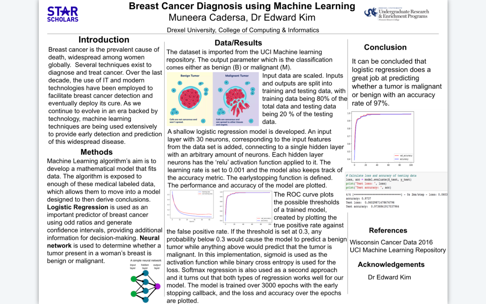
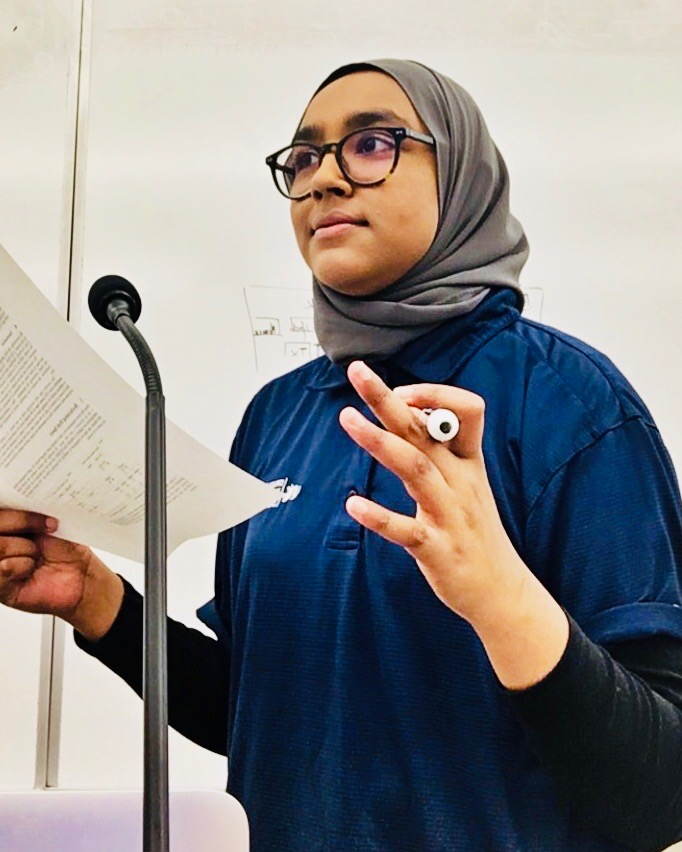
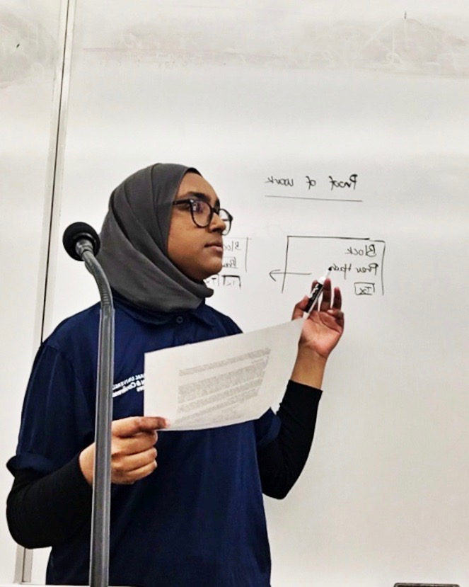

ABOUT ME
My name is Muneera Cadersa. I am a sophomore majoring in Data Science and Mathematics at Drexel University with minors in Software Engineering and Management Information Systems. I am expected to graduate in June 2024.
MY ROOTS
I was born and raised on a tropical island in the Indian Ocean called Mauritius. Mauritius lies east of Madagascar and on the South West of India.
Mauritius island is surrounded by perfect white sand beaches, surrounded by the stunning blue Indian Ocean, and the center of the island contains mountains and breathtaking scenery, plus almost year-round sunshine. The population of almost 1.3 million is 68 percent Indian, but also comprises Creole, Chinese, French, plus a smattering of British and South Africans.


PROJECTS & LEADERSHIP
-
Drexel University, STAR Research Scholar
Undergraduate Researcher in Machine Learning
(Jul 2020 - Sep 2020) -
Drexel University, College of Engineering
Undergraduate Research Fellow
(Jan 2020 - Jun 2020) -
Drexel University,
College of Computing & Informatics
Dean's Ambassador (Sep 2020 - Present) -
Drexel University,
Office of Housing & Residential Life
Residential Programming Assistant
(Apr 2020 - Present)
- Analyzed a dataset of 30 parameters using NumPy, Pandas, Scikit-learn, and Matplotlib to categorize breast cancer data as malignant or benign
- Trained data using Deep Learning techniques and generated a confusion matrix to visualize the performance of each model
- Research concluded that logistic regression could predict whether a tumor is malignant or benign at a 97% accuracy rate

- Used spiking neural networks simulators such as CARLsim and Neuron to process time series data
- Investigated new non-volatile memory architectures to implement machine learning tasks
- Developed Operating Systems-like framework to deploy their machine learning programs on neuromorphic systems
- Used MNIST database to train various image processing systems while identifying pattern recognition methods  
- Working in collaboration with CCI faculties to host multiple college events gathering 500+ attendees including prospective students, corporate partners, VIP guests and potential donors
- Providing academic and non-academic guidance and support to 500+ current and prospective students
- Managing coordination of event planning and administrative logistics for 500+ students on campus
- Supporting university staff in planning, budgeting, and evaluating performance of leadership programs
RELEVANT COURSEWORK
- INFO101 | Introduction to Computing & Security Technology
- INFO102 | Introduction to Information Systems
- INFO103 | Introduction to Data Science (Jupyter Notebook)
- INFO151 | Web Systems and Services
- INFO200 | Systems Analysis
- INF0202 | Data Curation
- INFO210 | Database Systems (SQL)
- INFO215 | Data Science Programming
- CI103 | Computing & Informatics Design
- CS172 | Computer Programming (Python)
- CS380 | Machine Learning
- MATH123 | Calculus III
- MATH180 | Discrete Computational Structures
- STAT202 | Business Statistics (R)
- ECON201 | Principles of Microeconomics
- ACCT116 | Managerial Accounting Foundations
- ENGR371 | Neuromorphic Computing
- ENGR370 | Application, Algorithm & Architecture for Neuromorphic Computing
CONNECT WITH ME